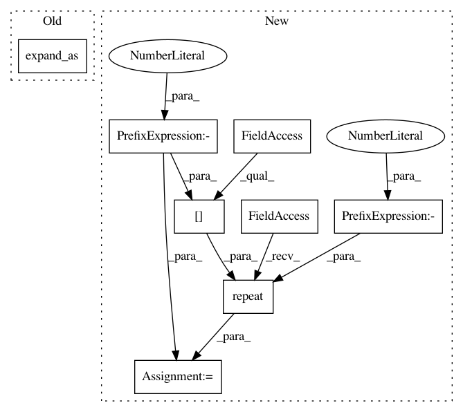

3763f47d3ef6543c0b12ab0e08213baad5f63153,geomstats/geometry/hyperbolic_space.py,HyperbolicMetric,log,#HyperbolicMetric#Any#Any#,604
Before Change
-1, keepdim=True).expand_as(
add_base_point)
norm_base_point = base_point.norm(2,
-1, keepdim=True).expand_as(
add_base_point)
res = (1 - norm_base_point ** 2) * \
((gs.arc_tanh(norm_add))) * (add_base_point / norm_add)
After Change
norm_add = gs.to_ndarray(gs.norm(add_base_point, -1), 2, -1)
norm_add = gs.repeat(norm_add, base_point.shape[-1], -1)
norm2_base_point = gs.to_ndarray(gs.sum(base_point**2, -1), 2, -1)
norm2_base_point = gs.repeat(norm2_base_point,
base_point.shape[-1], -1)
log = (1 - norm2_base_point) * gs.arctanh(norm_add)\
* (add_base_point / norm_add)
In pattern: SUPERPATTERN
Frequency: 3
Non-data size: 8
Instances
Project Name: geomstats/geomstats
Commit Name: 3763f47d3ef6543c0b12ab0e08213baad5f63153
Time: 2020-01-17
Author: thomas.l.p.gerald@gmail.com
File Name: geomstats/geometry/hyperbolic_space.py
Class Name: HyperbolicMetric
Method Name: log
Project Name: geomstats/geomstats
Commit Name: 3763f47d3ef6543c0b12ab0e08213baad5f63153
Time: 2020-01-17
Author: thomas.l.p.gerald@gmail.com
File Name: geomstats/geometry/hyperbolic_space.py
Class Name: HyperbolicMetric
Method Name: exp
Project Name: geomstats/geomstats
Commit Name: 3763f47d3ef6543c0b12ab0e08213baad5f63153
Time: 2020-01-17
Author: thomas.l.p.gerald@gmail.com
File Name: geomstats/geometry/hyperbolic_space.py
Class Name: HyperbolicMetric
Method Name: mobius_add